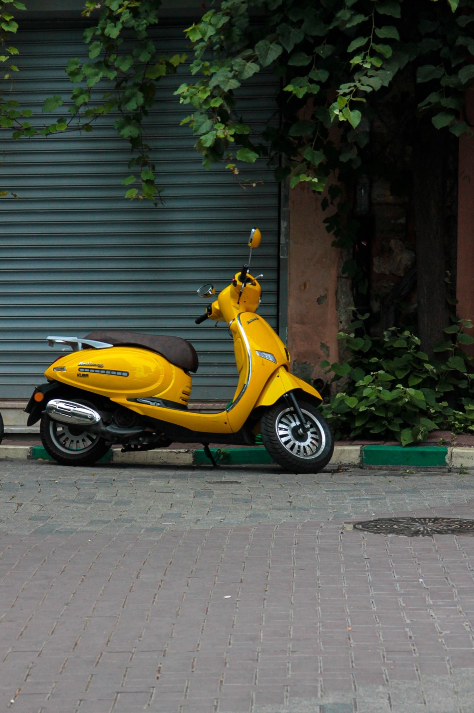
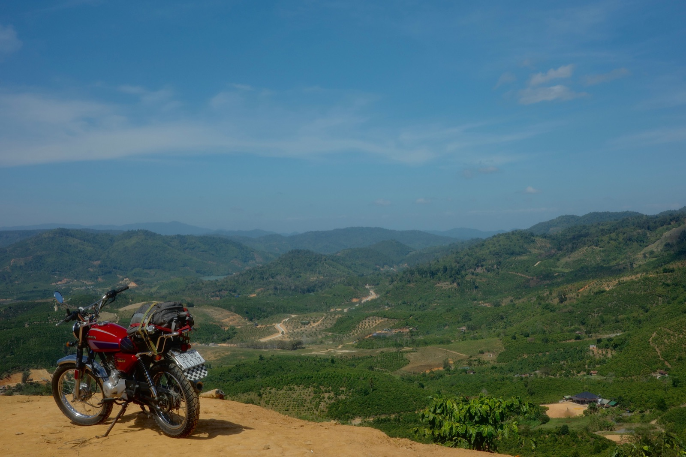

Основной поток идёт от проверенного партнёра-дилера в Ханое: свежие автоматы 50cc, преимущественно 2022–2023 годов, с небольшим пробегом. До поставки по каждому байку подтверждаем год, пробег, документы, фото и видео.
До решения покупатель получает реальные материалы по лоту: модель, год, заявленный пробег, фото регистрации с объёмом 50cc, свежие фото и видео запуска/езды. Мы не подменяем это общими фотографиями похожей модели и не называем байк «идеальным» без конкретных данных.
Партнёр в Ханое организует отправку в Нячанг. По каждой поставке заранее фиксируем дату, ориентировочный срок, способ упаковки, стоимость доставки, номер отправления и точку выдачи.

За 13–16 млн ₫ покупатель получает свежий автомат с минимальным пробегом, понятными документами, подтверждёнными материалами до покупки, подготовкой и доставкой в Нячанг. Это удобный вариант для тех, кто хочет купить свой байк и сразу пользоваться им в городе.
Напиши в WhatsApp или Telegram: скажем, какие реальные варианты есть или ожидаются, и пришлём материалы по ним. После этого можно спокойно выбрать байк, а не покупать «по красивой картинке».